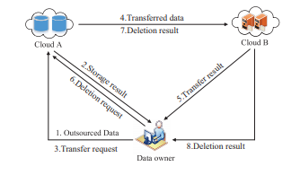

-
About This Project !
With the rapid development of cloud storage, an increasing number of data owners prefer to outsource their data to the cloud server, which can greatly reduce the local storage overhead. Because different cloud service providers offer distinct quality of data storage service, e.g., security, reliability, access speed and prices,
- 
cloud data transfer has become a fundamental requirement of the data owner to change the cloud service providers. Hence, how to securely migrate the data from one cloud to another and permanently delete the transferred data from the original cloud becomes a primary concern of data owners.
-
To solve this problem, we construct a new counting Bloom filter-based scheme in this paper. The proposed scheme not only can achieve secure data transfer but also can realize permanent data deletion.